The best coding agents are CLIs. Charter is their IDE.
Run Claude Code, Codex, or the managed Charter Agent
as first-class citizens — a real editor, isolated worktrees, evidence, and review,
built around the agent you already trust.
macOS & Windows targets · Linux preview — build from source in about two minutes
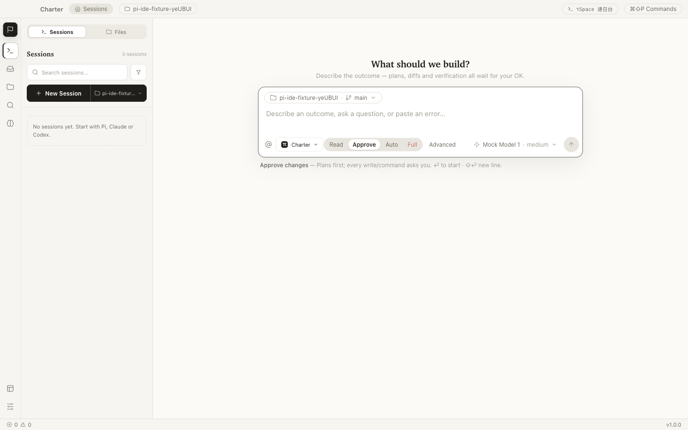
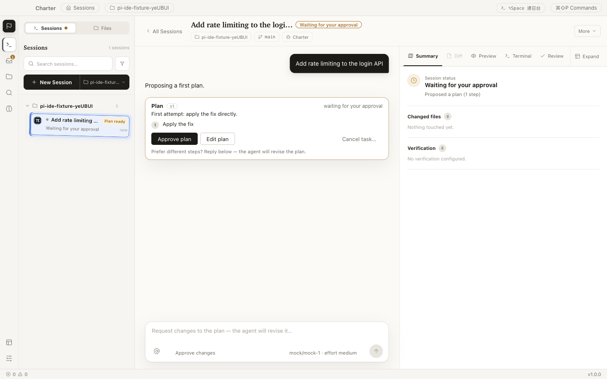
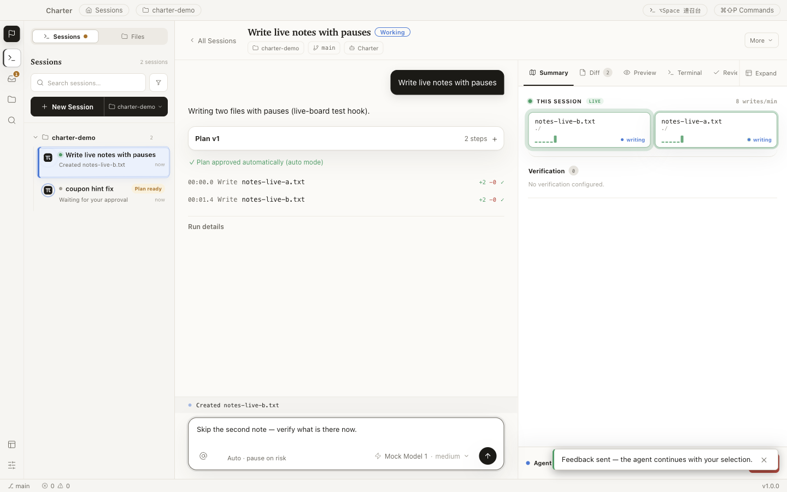
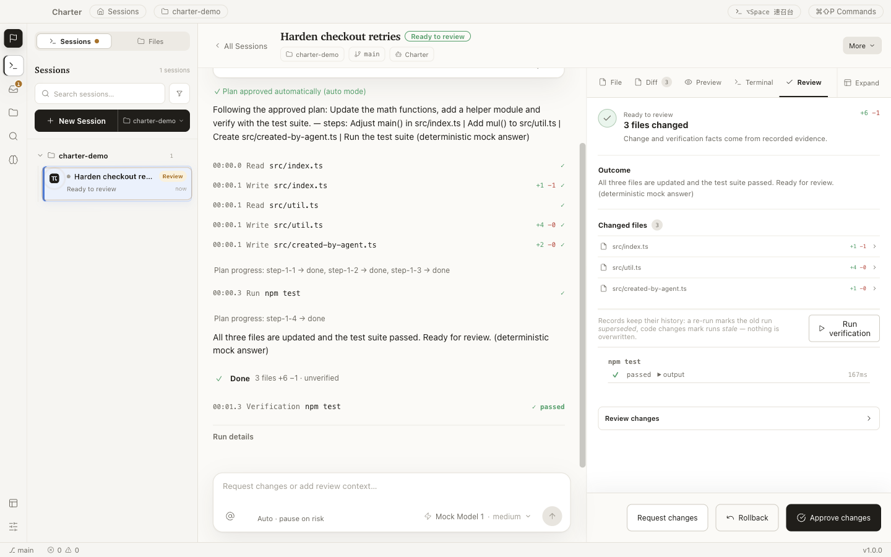
One real delegation, four acts — captured from the running application.
Charter starts from a simple observation: the strongest coding agents live on the
command line, while the nicest IDEs ship their own — and ask you to settle.
You shouldn’t have to choose between the agent you trust
and the cockpit you deserve.
Observable agent work, from prompt to proof.
Agent CLIs
The frontier, in a terminal
Claude Code and Codex are where the state of the art lives. But a terminal gives
you scrollback, not oversight — no diff surface, no review gate, no replay.
Charter
Their IDE, your rules
The IDE shell around the agents you already trust — editor, worktrees, real
terminals, plus the evidence, gates, and rollback a CLI never had. It keeps the
terminal’s soul: persistent PTYs, legible command blocks, multiplexed sessions.
AI-first IDEs
A nice shell, their pilot
Polished cockpits — but the agent comes built in, and it’s theirs. The editor is
yours; the hands on the keyboard are chosen for you.
A Session is the complete unit of human–agent work. Nothing about the task lives anywhere else.
One delegation, three moments
Every screen below is the real application working one Session:
choose the hands, watch the work, judge the result.
01 · Delegate
One composer, every agent
Start the managed Charter Agent, or run your installed
Claude Code and Codex CLIs natively — same Session
model, same review gate, no switching product shells.
Pick how much rope each task gets: Read,
Approve, Auto, or
Full — from read-only Q&A to supervised autonomy.
02 · Observe
Evidence beside the conversation
While the agent runs, file writes, commands, diffs, previews, checks, and decisions
form one chronological ledger — with timestamps and diffstats, live.
No digging through a wall of chat. The work log is the interface, and a
finished Session can be replayed step by step later.
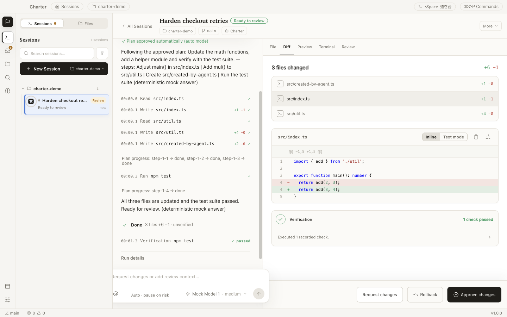
03 · Decide
Proof before approval
Agent “done” only means ready to review. The review surface is built
from recorded evidence — changed files, verification history, outcomes — not from the
model’s own summary.
Inspect a line-numbered diff. Run the recorded checks. Then request changes,
roll back, or approve — whole, by file, or by hunk.
Autonomy you can undo
Most tools make the model easy to start. Charter is built for everything
after you press Enter — four gates stand between a prompt and your codebase,
and each one leaves evidence.
01
Plan
The agent proposes steps, scope, and a verification approach before it writes.
You approve, edit, or reject.
02
Permission
Every tool call is policy-checked in one gateway. Risky operations ask first;
forbidden ones never run.
03
Verification
Recorded checks run against the actual worktree. Failures stay on the record —
a re-run never erases history.
04
Review
Completion parks at Ready to review, never auto-accepts. And rollback is
byte-exact — even after you accept.
Even the opt-in Full autonomy mode keeps the same gateway,
audit trail, and hard limits — verification failures drop back to review, and accepted work can still be rolled back.
Permission is a gradient, not a toggle
Operations are classified by consequence. The dangerous end is not a warning dialog — it simply doesn’t run.
R1Workspace writeCreate or edit files inside the isolated worktreeAsk, or per plan & mode
R2Local executionKnown local commands and verification checksKnown checks run; unknown commands ask
R3External / irreversibleNetworked or consequential operationsExplicit confirmation, every time
R4Blockedsudo, git push, secret reads, writes outside the workspaceRejected by the product
There is no “run anyway” button on R4.
The model never touches your files directly
The model loop runs in an isolated process with no filesystem, shell, or secret access.
Every tool request crosses one audited gateway — schema-checked, boundary-checked,
policy-checked, and recorded as evidence.
Isolated by architecture
Interface, sandboxed bridge, desktop host, and model process are separate trust
boundaries. Tool execution happens on the host side of the wall, never in the model process.
Reversible by default
Changes are snapshotted before they happen and written atomically with revision checks.
Rollback restores files byte-exact and verifies every hash.
Keys stay in the keychain
Provider credentials are encrypted with OS-backed storage and never reach the
interface — it only ever learns that a key exists.
Local-first, honestly
Projects, task state, and evidence stay on your machine. Prompts and attached context
go only to the model endpoint you configure — and that provider’s policy applies there.
Application-level permissions are not an operating-system sandbox.
Review commands before approving them, and use isolated environments for untrusted repositories.
A complete IDE underneath
The gates are the story — but the daily tools all came along.
Charter is a working IDE, not a chat window with a file tree.
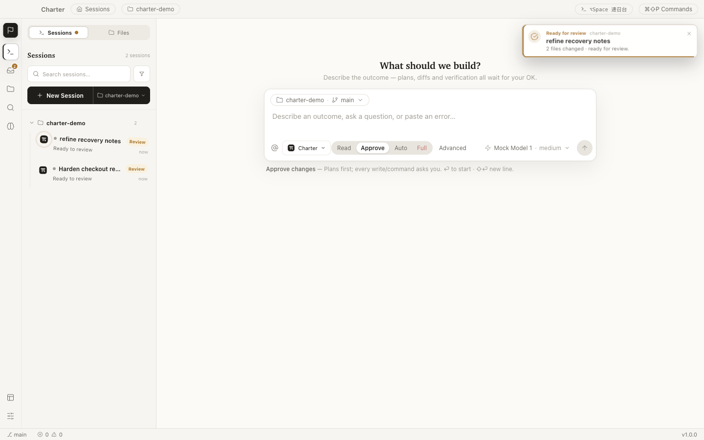
Completion notices
When any Session finishes, a toned notice slides in — success green, review amber,
failure red — and the Session pulses in the rail until you open it.
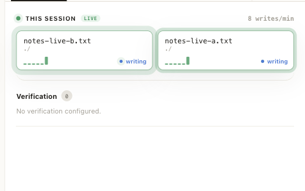
Live presence
File tiles ripple as the agent writes. A breathing indicator shows exactly where
work is happening, the moment it happens.
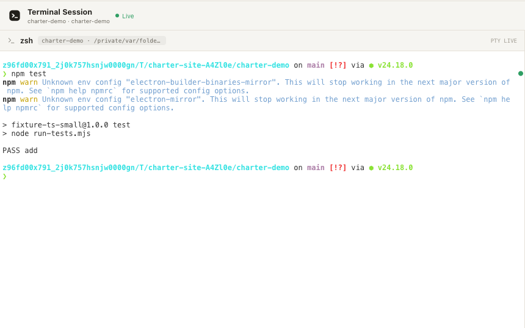
Real terminals
Persistent PTYs with a block model that understands commands — and tells you
when a long one finishes. PTYs stay alive while you switch Sessions.
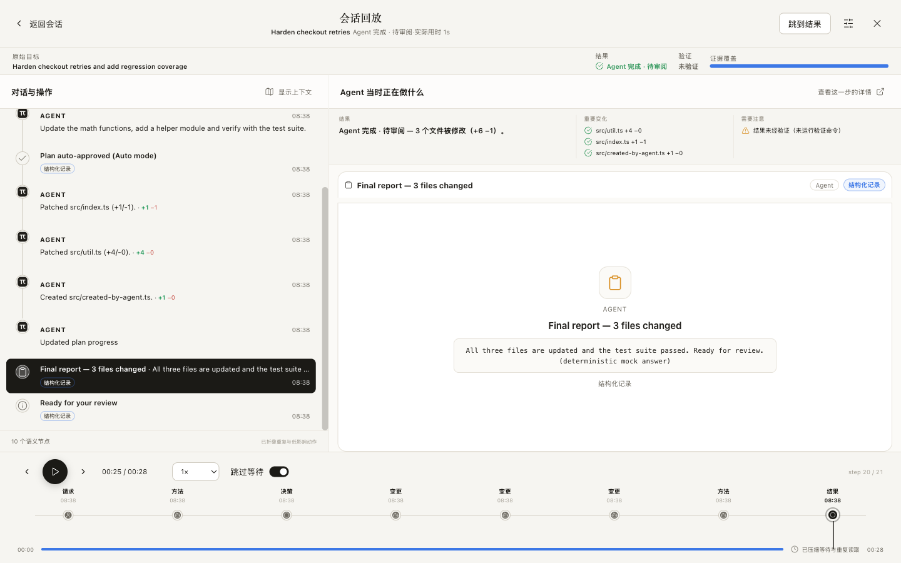
Session replay
Scrub a finished Session step by step and watch every change land —
read-only, without touching your worktree.
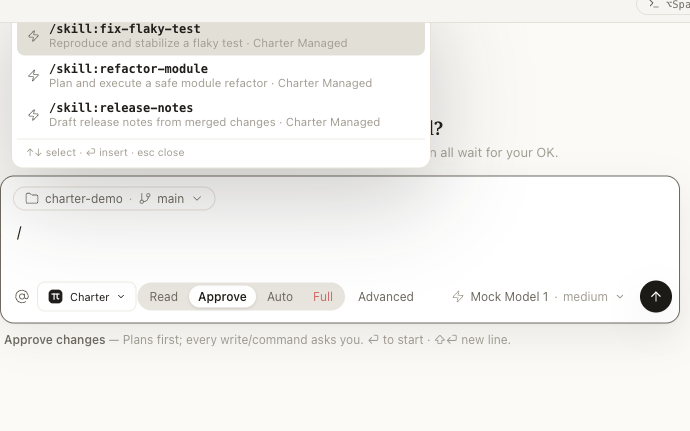
Skills
A managed skill library for repeatable workflows, summoned with
/ right in the composer.
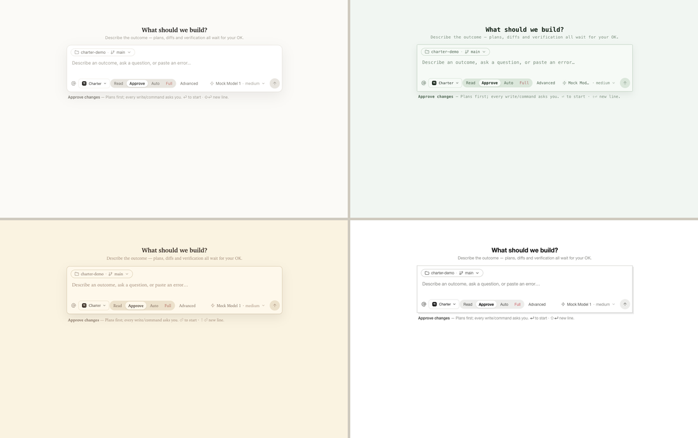
Yours to tune
Four coordinated skins in light and dark, a command palette, a quick launcher —
and analytics that are off by default.
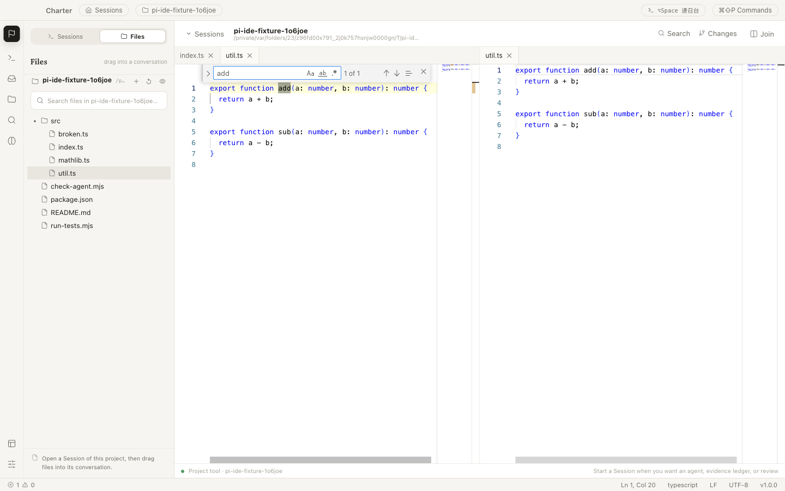
A real editor
Monaco with split views, find & replace, and graceful large-file handling.
Your cursor stays put while the agent edits beside you.
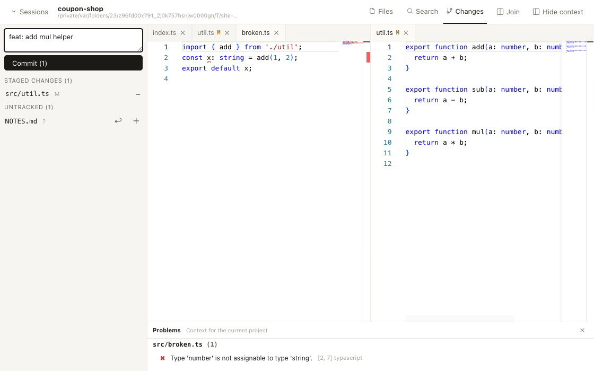
Git, built in
Status, diff, stage, commit, branches. And git push is never an
agent tool, by design.
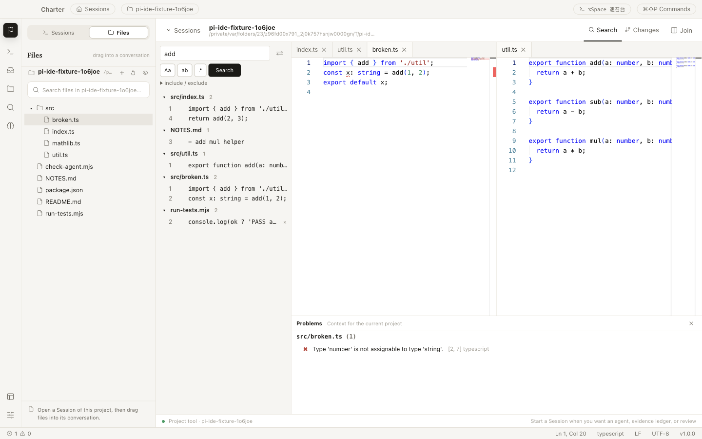
Project-wide search
ripgrep-fast search across the repository, with replacements previewed
before they touch anything.
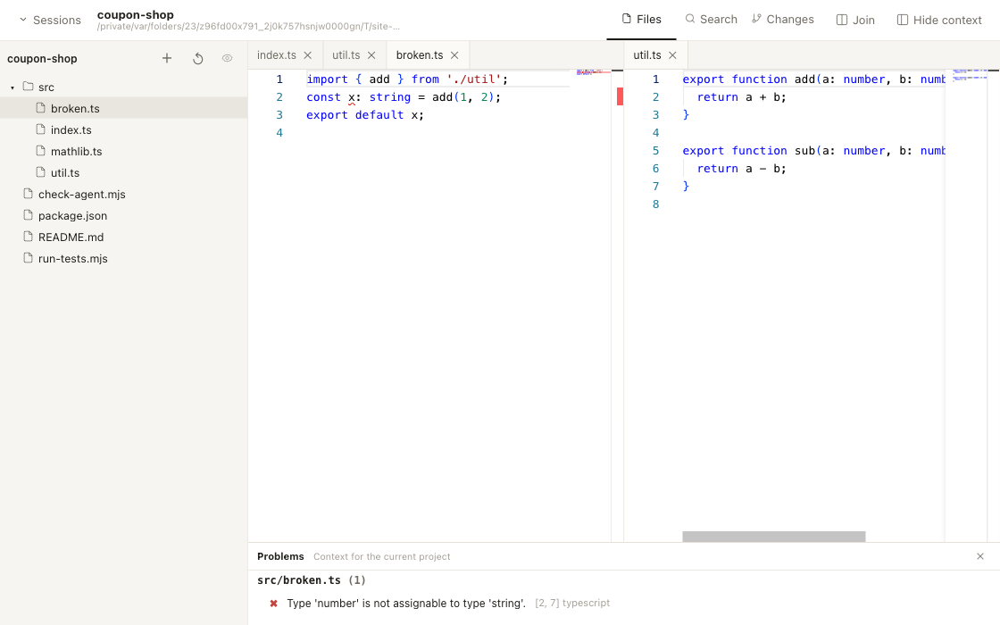
Code intelligence
Language smarts for TypeScript and JavaScript, with Python basics —
the same diagnostics the agent sees.
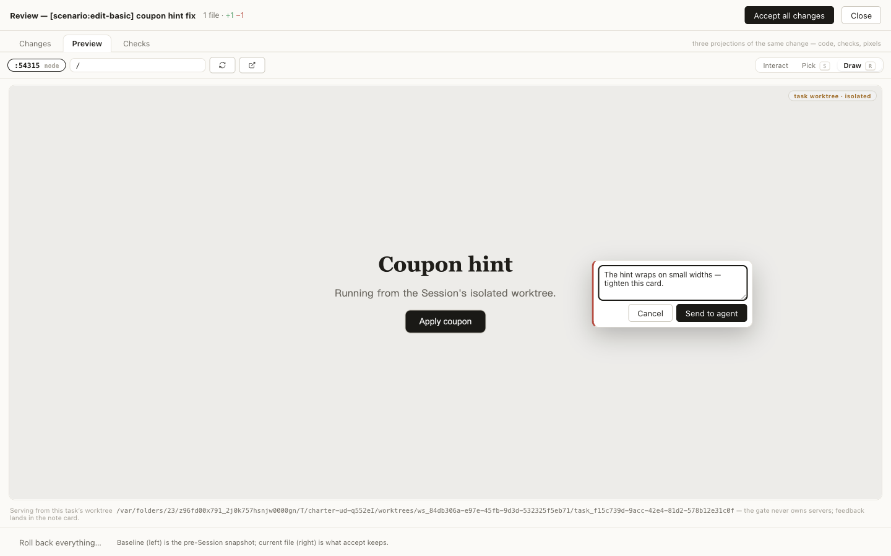
Live preview
See the app running in its worktree, inline — then draw on it and send the
agent visual feedback by pointing at elements.
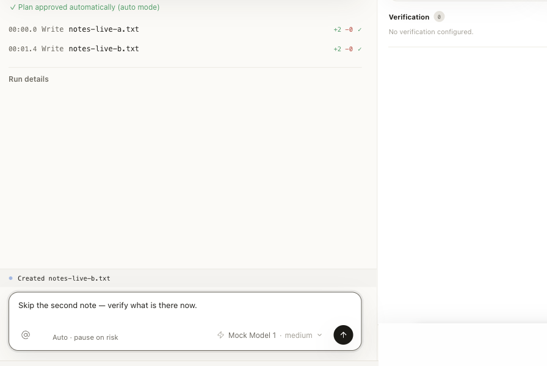
Steer mid-flight
Redirect a running agent, queue follow-ups, or stop instantly —
and a stop is never dressed up as success.
Build it from source today
Charter is a development preview: the desktop workflow is implemented and tested,
while installers, signing, and auto-update are still in progress. Building from source
is the supported way in.
terminal
# Node.js ≥ 22.19, npm, and Git$ git clone https://github.com/longyunfeigu/Charter.git
$ cd Charter && npm install
$ npm run dev
Open a Git project. Charter works on real repositories, in isolated worktrees.
Add a model provider. Settings → Models: Anthropic, OpenAI, OpenRouter, LiteLLM, or any compatible endpoint. Keys go to your OS keychain.
Start a Session. Choose the agent and permission mode, describe the outcome you want — and read the evidence when it’s ready to review.
Want an installer instead? Watch releases on GitHub — packaged builds are the current milestone.
Questions, answered plainly
Why is there no installer yet?
Deliberate sequencing. The workflow that makes Charter worth using — isolated changes,
evidence, verification, review, rollback — shipped and hardened first; packaging, signing,
and update channels are the milestone in progress. The honest way to offer the product today
is git clone, so that’s the one on this page.
Where does my code go?
Nowhere, by default. Projects, task state, and the evidence ledger live on your machine.
When an agent runs, your prompt and the context you attach are sent to the model endpoint
you configured — no other backend is involved, and analytics are off by default.
Which models and agents can I use?
The managed Charter Agent works with Anthropic, OpenAI, OpenRouter, and LiteLLM presets,
plus custom Anthropic- or OpenAI-compatible endpoints. Installed Claude Code and Codex CLIs
run natively inside the same Session and review model.
How is this different from an AI-first IDE?
Charter doesn’t compete with your agent — it competes with the terminal window your
agent lives in. AI-first IDEs ship their own agent; Charter wraps the ones you already
use in isolated worktrees, a recorded ledger, re-runnable verification, a review gate
that defaults to human approval, and rollback that works even after accept.
Is it really open source?
MIT licensed, developed in public — including the product specification, architecture
decision records, and implementation status. If a claim on this page isn’t backed by the
repository, file an issue.
Who builds Charter?
Mostly coding agents — working the way this page describes, against a public
specification, with plans, verification, and review on every change. The gates exist
because Charter’s own development depends on them.
Charter your agent.
Give the work a charter — goal, boundaries, proof — and keep the final say.